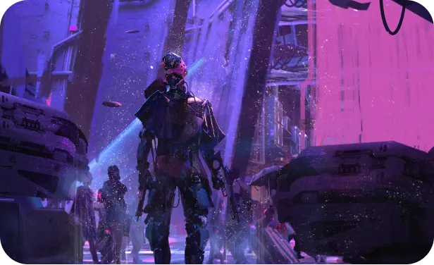

Très apprécié dans de nombreux médias, le genre cyberpunk s’apparente à un mélange de science-fiction et de dystopie.
Représentatif de conflits sociaux-politiques, il est également reconnu pour son univers fortement technologique et futuriste.
S’étant établi à travers de nombreux médias et œuvres telles que la série de mangas Gunnm, le film Akira ou plus récemment le jeu vidéo Cyberpunk 2077, il reste très apprécié de nos jours. En effet, c’est vers la fin des années 1980 qu’il émerge jusqu’à son déclin en 1990, non sans laisser de trace.
Découvrez un univers de rébellion et de conflits sociaux dans un monde de néons et de technologie avancée.